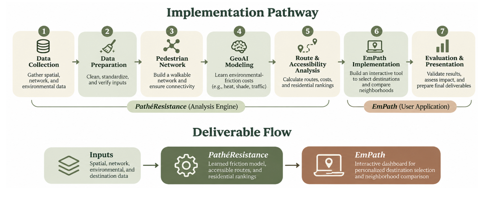

1. The photograph
USDA NAIP imagery shows the landscape in 2022.
How EmPath is made
We combine public maps, environmental data and stated walking preferences to compare access to everyday destinations.
01 / The whole process
The study began with ZIP areas 75025, 75024, 75074 and 75023. The current prototype covers Plano plus surrounding data for routes across the city line.
A pretrained AI predicts tree-covered pixels. Walking-effort preferences are chosen settings, not learned from local walkers’ choices.
Gather paths, destinations, boundaries, imagery, heat and traffic data.
Align coordinates, clean records and check missing information.
Build a walking network that preserves alternative routes.
Predict trees and attach environmental features to each path.
Score segments, find routes and compare residential areas.
Let people choose categories and inspect results in EmPath.
Check the calculations and identify what needs field validation.

The roadmap proposes a learned friction model. The prototype uses a stated-preference formula; fitting preferences to observations remains future work.
02 / Reading the landscape
GeoAI applies AI to geographic data. A pretrained model labels tree-covered pixels in aerial photographs. We measure their share near each walking segment.


USDA NAIP imagery shows the landscape in 2022.
Restor’s TCD SegFormer-B0 model marks predicted trees in green. Local prediction accuracy remains unverified.
Sample beside each path to calculate nearby tree fraction. Trees outside its corridor do not count.
Nearby predicted trees indicate potential shade, not measured sidewalk shade at a specific hour.
Summer 2025 Landsat surface temperatures provide heat context, adjusted by nearby canopy deficit. This is not air temperature or live weather.
Nearby TxDOT road-volume counts add a normalized traffic cost, not a collision-risk prediction.
03 / Building the walking network
Dots mark junctions; lines represent mapped walking segments. Their connections let us compare routes.
OpenStreetMap supplies the connections. We preserve alternative routes so longer paths with better surroundings can compete with faster ones.
Census-block reference points and destinations connect to nearby junctions. Connections over 100 m are flagged. Reference points are not verified entrances; connector walking time and crossing waits are excluded.
A home-to-service summary shows calculated trip costs; routing still uses the detailed network: 98,193 nodes and 290,552 directed edges across Plano and its search area.
04 / Four calculations, one decision
“Friction” is the extra cost assigned to less desirable walking conditions.
Estimate walking time at 1.2 meters per second. Increase its cost for sparse trees, higher surface heat and heavier traffic.
A four-minute walk × 1.5 = six effort minutes. Estimated walking time remains four minutes.
Try an illustrative segment
Modeled segment cost
6.2effort minutes
4 minutes × 1.56 multiplier
Example using the current formula; does not change the map.
w = (L ÷ 1.2) × [1 + 6(1 − C)²(1 + H) + Q]
L is length in meters; C is nearby predicted tree fraction; H and Q are the normalized heat and traffic features. Each feature is between 0 and 1. Divide the result by 60 for effort minutes.
Squaring the tree deficit emphasizes exposed paths. Heat amplifies this penalty. The coefficient 6 and exponent 2 are chosen preference settings, not fitted behavioral estimates.
The proposal writes the general version as wθ(e,t) = T(e)[1 + fθ(xₑ,hₜ)]: ordinary time multiplied by a nonnegative environmental penalty. Learning that penalty from route-choice observations is a research goal; the current prototype does not fit θ or predict time-specific shade.
Add segment costs to compare complete routes:
| Route | Ordinary time | Effort cost |
|---|---|---|
| A | 8 min | 12 |
| B | 10 min | 11 · lower effort |
Time-only chooses A; modeled effort chooses B. Actual preferences remain untested.
Dijkstra’s algorithm tracks the best total cost to each junction. It examines the lowest unsettled total next, updating neighbors when it finds a cheaper route. Segment costs must be nonnegative.
Numbers on lines = segment costs
The start costs zero. No route to the other points has been found yet (∞).
Start → B costs 2; B → A adds 1; A → End adds 3. Total: 6. The direct route through A costs 7, and the route through B alone costs 8.
C(P) = Σ w(e), for every segment e in route P
Σ means “add these up.” Dijkstra finds the lowest sum. Unreachable destinations are unavailable.
From each residential reference point, find the lowest-cost destination in each selected category, such as groceries or pharmacies. “Nearest” means route cost, not straight-line distance.
The score averages separate one-way trips, not a multi-stop tour or round trip.
The proposal’s F(r) = Σ d(r,d) adds costs to specific places. The interface averages costs to the best place in each selected category. For a fixed category count, sum and average rank areas identically; the units and destination choices differ.
Score(b) = (1 / |K|) Σₖ mind ∈ Dₖ cost(b,d)
b is a residential block, K the selected categories, and Dₖ the places in category k. A missing category route makes the complete score unavailable; it never becomes a free trip.
Rank eligible residential areas by average effort. Changing categories can change the winner.
| Area | Place of worship | Grocery | Pharmacy | Average |
|---|---|---|---|---|
| A | 8 | 5 | 7 | 6.7 |
| B | 6 | 9 | 8 | 7.7 |
| C | 4 | 8 | 6 | 6.0 |
Area C has the lowest average cost: 6.0 effort minutes.
Invented example; real comparisons use the same network, categories and rule across areas.
r* = argminr ∈ R F(r)
“Choose the location with the smallest score.” The result is an area, not a property recommendation. Equal scores tie.
05 / Coverage, checks & limits
Plano Census blocks with recorded housing, a reference point within 100 m of the network and routes to every selected category. An address selects its block, not a door-to-door route.
Paths, destinations and environmental data extend 3 km past Plano to include cross-boundary trips. A conservative boundary-cost check flags trips that might have a better alternative outside the search area.
Colors compare costs using a 2nd–98th percentile display stretch; scores stay unchanged. Gray non-residential areas and incomplete results do not indicate low effort.
Population, housing and demographic estimates provide context, not route weights. Area estimates do not describe individual homes or people.
Checked in the prototype
Checks cover valid weights, shortest paths, route-to-score consistency, coverage and the interface. Effort routing changed 12 of 18 benchmark trips; this demonstrates model behavior, not human preference accuracy.
Still to establish
Tree accuracy, time-specific shade, comfort and preferences need independent evaluation. Sidewalks, entrances and crossings need auditing; mapped connections do not establish safe or accessible passage.
Learned preferences and time-dependent features remain future work.
06 / Sources & reproducibility
Based on the proposal, algorithm guide and roadmap; linked metadata records the current implementation.
OpenStreetMap contributors supply the mapped network and places, obtained through Geofabrik. Plano GIS supplies the municipal boundary.
2022 USDA NAIP aerial imagery; pretrained Restor TCD SegFormer-B0; summer 2025 USGS Landsat surface temperature; TxDOT traffic counts.
2020 Census blocks and population; 2020–2024 American Community Survey housing and demographic estimates. Disability context uses tracts. Clipping a boundary does not create finer observations.
For another city, replace local data, rebuild features and repeat validation. Reassess the preference settings.